X2521–X2593¶
Circle Similicenters, Radical Centers & Isoconjugates II
Similicenters and intersections involving the orthocentroidal, 2nd Brocard, Parry, and Gallatly circles (X2521–X2573), followed by isogonal and Xk-isoconjugates (X2574–X2593).
X2521–X2593 (Circle Similicenters, Radical Centers & Isoconjugates II) — 16 representative centers (from 73 in collection) constructed on acute reference triangle \((a, b, c) = (5, 6, 7)\) with unit baseline AB = \(1\).¶
X2522RADICAL CENTER OF {NINE-POINT,BROCARD, APOLLONIUS} CIRCLES
X2522 = crossdifference of every pair of points on line X1X25
X2524RADICAL CENTER OF {NINE-POINT, BROCARD, 2nd BROCARD} CIRCLES
X2524 = reflection of X2489 in X2507
X2525RADICAL CENTER OF {NINE-POINT, BROCARD, (X4,2R)} CIRCLES
X2525 = X305-Ceva conjugate of X125
X2526RADICAL CENTER OF {NINE-POINT, APOLLONIUS, (X4,2R)} CIRCLES
X2526 = reflection of X650 in X1491
X2527RADICAL CENTER OF {NINE-POINT, SPIEKER, BEVAN} CIRCLES
X2527 = midpoint of X2516 and X2529
X2528RADICAL CENTER OF {ORTHOCENTROIDAL, BROCARD, (X4,2R)} CIRCLES
X2528 = X99-Ceva conjugate of X141
X2529RADICAL CENTER OF {ORTHOCENTROIDAL, SPIEKER, BEVAN} CIRCLES
X2529 = reflection of X2516 and X2537
X2530RADICAL CENTER OF {BROCARD, BEVAN, (X4,2R)} CIRCLES
X2530 = reflection of X667 and X905
X2531RADICAL CENTER OF {BROCARD, (X4,2R), 2nd BROCARD} CIRCLES
X2531 = bicentric difference of PU(156)
X2533RADICAL CENTER OF {BEVAN, FUHRMANN, (X4,2R)} CIRCLES
X2533 = crosspoint of X10 and X668
X2534INSIMILICENTER(INCIRCLE, SPIEKER RADICAL CIRCLE)
The Spieker radical circle, with center X10 and radius d/2, is introduced in
X2535EXSIMILICENTER(INCIRCLE, SPIEKER RADICAL CIRCLE)
X2535 is the exsimilicenter(incircle, Spieker radical circle).
X2536INSIMILICENTER(CIRCUMCIRCLE, SPIEKER RADICAL CIRCLE)
X2536 is the insimilicenter(circumcircle, Spieker radical circle).
X2537EXSIMILICENTER(CIRCUMCIRCLE, SPIEKER RADICAL CIRCLE)
X2537 is the exsimilicenter(circumcircle, Spieker radical circle).
X2538INSIMILICENTER(APOLLONIUS CIRCLE, SPIEKER RADICAL CIRCLE)
X2538 is the insimilicenter(Apollonius circle, Spieker radical circle).
X2539EXSIMILICENTER(APOLLONIUS CIRCLE, SPIEKER RADICAL CIRCLE)
X2539 is the exsimilicenter(Apollonius circle, Spieker radical circle).
X2540INSIMILICENTER(NINE-POINT CIRCLE, SPIEKER RADICAL CIRCLE)
X2540 is the insimilicenter(nine-point circle, Spieker radical circle).
X2541EXSIMILICENTER(NINE-POINT CIRCLE, SPIEKER RADICAL CIRCLE)
X2541 is the exsimilicenter(nine-point circle, Spieker radical circle).
X2542INSIMILICENTER(BROCARD CIRCLE, (X4,2R))
The circle (X4,2R) is identified at X2474.
X2543EXSIMILICENTER(BROCARD CIRCLE, (X4,2R))
The circle (X4,2R) is identified at X2474.
X2544INSIMILICENTER(GALLATLY CIRCLE, (X4,2R))
The circle (X4,2R) is identified at X2474.
X2545EXSIMILICENTER(GALLATLY CIRCLE, (X4,2R))
The circle (X4,2R) is identified at X2474.
X2546INSIMILICENTER(1st LEMOINE CIRCLE, (X4,2R))
The circle (X4,2R) is identified at X2474.
X2547EXSIMILICENTER(1st LEMOINE CIRCLE, (X4,2R))
The circle (X4,2R) is identified at X2474.
X2548INSIMILICENTER(MOSES CIRCLE, (X4,2R))
The circle (X4,2R) is identified at X2474.
X2549EXSIMILICENTER(MOSES CIRCLE, (X4,2R))
The circle (X4,2R) is identified at X2474.
X2550INSIMILICENTER(SPIEKER CIRCLE, (X4,2R))
The circle (X4,2R) is identified at X2474.
X2551EXSIMILICENTER(SPIEKER CIRCLE, (X4,2R))
The circle (X4,2R) is identified at X2474.
X2552INSIMILICENTER(ORTHOCENTROIDAL CIRCLE, (X4,2R))
The circle (X4,2R) is identified at X2474.
X2553EXSIMILICENTER(ORTHOCENTROIDAL CIRCLE, (X4,2R))
The circle (X4,2R) is identified at X2474.
X25541st INTERSECTION(EULER LINE, 2nd BROCARD CIRCLE)
Of the two points of intersection, X2554 is one closer to X4.
X25552nd INTERSECTION(EULER LINE, 2nd BROCARD CIRCLE)
Of the two points of intersection, X2555 is one farther from X4.
X25561st INTERSECTION(LINE X1X_3, 2nd BROCARD CIRCLE)
Of the two points of intersection, X2556 is one closer to X1.
X25572nd INTERSECTION(LINE X1X_3, 2nd BROCARD CIRCLE)
Of the two points of intersection, X2557 is one farther from X1.
X2558INSIMILICENTER(1st LEMOINE CIRCLE, 2nd BROCARD CIRCLE)
X2558 is the insimilicenter(1st Lemoine circle, 2nd Brocard circle).
X2559EXSIMILICENTER(1st LEMOINE CIRCLE, 2nd BROCARD CIRCLE)
X2559 is the exsimilicenter(1st Lemoine circle, 2nd Brocard circle).
X2560INSIMILICENTER(2nd LEMOINE CIRCLE, 2nd BROCARD CIRCLE)
X2560 is the insimilicenter(2nd Lemoine circle, 2nd Brocard circle).
X2561EXSIMILICENTER(2nd LEMOINE CIRCLE, 2nd BROCARD CIRCLE)
X2561 is the exsimilicenter(2nd Lemoine circle, 2nd Brocard circle).
X2562INSIMILICENTER(GALLATLY CIRCLE, 2nd BROCARD CIRCLE)
X2562 is the insimilicenter(gallatly circle, 2nd Brocard circle).
X2563EXSIMILICENTER(GALLATLY CIRCLE, 2nd BROCARD CIRCLE)
X2563 is the exsimilicenter(gallatly circle, 2nd Brocard circle).
X2564INSIMILICENTER(INCIRCLE, 2nd BROCARD CIRCLE)
X2564 is the insimilicenter(incircle, 2nd Brocard circle).
X2565EXSIMILICENTER(INCIRCLE, 2nd BROCARD CIRCLE)
X2565 is the exsimilicenter(incircle, 2nd Brocard circle).
X2566INSIMILICENTER(NINE-POINT CIRCLE, 2nd BROCARD CIRCLE)
X2566 is the insimilicenter(nine-point circle, 2nd Brocard circle).
X2567EXSIMILICENTER(NINE-POINT CIRCLE, 2nd BROCARD CIRCLE)
X2567 is the exsimilicenter(nine-point circle, 2nd Brocard circle).
X2568INSIMILICENTER(SPIEKER CIRCLE, 2ndBROCARD CIRCLE)
X2568 is the insimilicenter(Spieker circle, 2ndbrocard circle).
X2569EXSIMILICENTER(SPIEKER CIRCLE, 2nd BROCARD CIRCLE)
X2569 is the exsimilicenter(Spieker circle, 2nd Brocard circle).
X2570INSIMILICENTER(ORTHOCENTROIDALCIRCLE, 2nd BROCARD CIRCLE)
X2570 is the insimilicenter(orthocentroidalcircle, 2nd Brocard circle).
X2571EXSIMILICENTER(ORTHOCENTROIDALCIRCLE, 2nd BROCARD CIRCLE)
X2571 is the exsimilicenter(orthocentroidalcircle, 2nd Brocard circle).
X2572INSIMILICENTER(BEVAN, 2nd BROCARD CIRCLE)
X2572 is the insimilicenter(Bevan, 2nd Brocard circle).
X2573EXSIMILICENTER(BEVAN, 2nd BROCARD CIRCLE)
X2573 is the exsimilicenter(Bevan, 2nd Brocard circle).
X2574ISOGONAL CONJUGATE OF X1113
As the isogonal conjugate of a point on the circumcircle, X2574 lies on the line at infinity.
X2575ISOGONAL CONJUGATE OF X1114
As the isogonal conjugate of a point on the circumcircle, X2575 lies on the line at infinity.
X2576-ISOCONJUGATE OF X2574
X2576 = isogonal conjugate of X2582
X2577-ISOCONJUGATE OF X2575
X2577 = isogonal conjugate of X2583
X2578-ISOCONJUGATE OF X1113
X2578 = isogonal conjugate of X2580

X2579-ISOCONJUGATE OF X1114
X2579 = isogonal conjugate of X2581
X2580-ISOCONJUGATE OF X2574
X2580 = isogonal conjugate of X2578

X2581-ISOCONJUGATE OF X2575
X2581 = isogonal conjugate of X2579

X2582-ISOCONJUGATE OF X1113
X2582 = isogonal conjugate of X2576
X2583-ISOCONJUGATE OF X1114
X2583 = isogonal conjugate of X2577

X2584-ISOCONJUGATE OF X1113
X2584 = isogonal conjugate of X2586

X2585-ISOCONJUGATE OF X1114
X2585 = isogonal conjugate of X2587
X2586-ISOCONJUGATE OF X2574
X2586 = isogonal conjugate of X2584
X2587-ISOCONJUGATE OF X2575
X2587 = isogonal conjugate of X2585
X2588-ISOCONJUGATE OF X1113
X2588 = isogonal conjugate of X1822
X2589-ISOCONJUGATE OF X1114
X2589 = isogonal conjugate of X1823
X2590-ISOCONJUGATE OF X1381
X2590 = X2170-cross conjugate of X2591

X2591-ISOCONJUGATE OF X1382
X2591 = crosspoint of X57 and X1382

X2592-ISOCONJUGATE OF X1822
X2592 = polar conjugate of X1113
X2593-ISOCONJUGATE OF X1823
X2593 = trilinear pole of line X523X1312